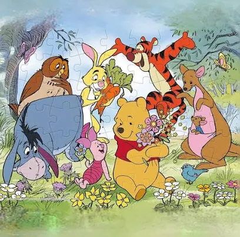

A LITTLE CURIOSITY. A CLEARER PICTURE.
Good questions.
Connected answers.
Step into a different way of understanding a company. Follow a question across financial statements, years, and the world beyond the numbers.
✓ Traceable sources · Role-aware access · Explainable answers

Every number
has a story.
has a story.
A thoughtful little place for big questions.
01 / CHOOSE YOUR PERSPECTIVE
Same company. Different questions.
Your role shapes the evidence you can explore.
Role selection simulates access; it is not a real login.
Meet Miklos & Co., a fictional company for this research demonstration. All financial figures and credentials are simulated.
?
START WITH THE QUESTIONLess time finding information.
Less time finding information.
More room to understand it.
Connect company disclosures with external evidence, then make the source, authority, and reasoning visible.
A FICTIONAL COMPANY. REAL RESEARCH QUESTIONS.
Miklos & Co.DEMO
DATA PERIODFY2025USD millions